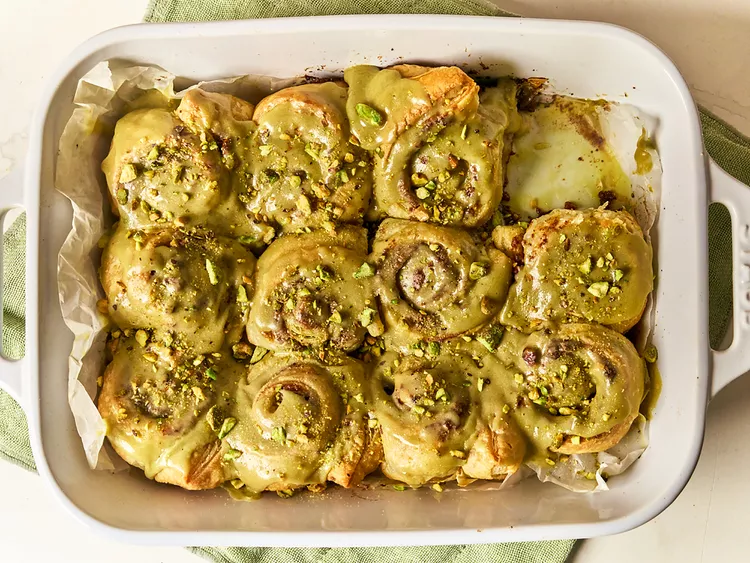

Home
Pistachio Cream Cinnamon Rolls Recipe

Description
This pistachio cream cinnamon roll recipe uses puff pastry to make
cinnamon rolls in a novel way. They're finished with a lovely glaze made
with mascarpone and pistachio cream.
Ingredients
- 1 cup mascarpone cheese, divided
- 1/4 cup white sugar
- 1/4 cup brown sugar
- 2 tablespoons ground cinnamon
- 2 tablespoons melted butter
- 1/4 teaspoon salt, divided
- 1 (17.3 ounce) package puff pastry, thawed
-
1/2 cup finely chopped pistachios, plus more for garnish if desired
- 3/4 cup pistachio cream, divided
- 2 tablespoons heavy cream
Steps
-
Step 1: Preheat the oven to 400 degrees F (200 degrees C). Line a baking
sheet with parchment or grease a 9x13-inch baking dish.
-
Step 2: Combine 1/2 cup mascarpone, white sugar, brown sugar, cinnamon,
melted butter, and 1/8 teaspoon salt in a bowl and mix until smooth.
-
Step 3: Roll pastry sheets out on a lightly floured surface. Divide
sugar mixture among the 2 sheets and spread into a thin layer going
almost to the edges. Sprinkle each sheet evenly with chopped pistachios
and drizzle each with 2 tablespoons pistachio cream.
-
Step 4: Roll each sheet into a log and place seam side down on the
cutting board. Use a sharp knife to cut each log into 6 pinwheels. Place
cinnamon rolls, cut side up, into the prepared pan.
-
Step 5: Bake in the preheated oven until lightly golden brown, 20 to 25
minutes.
-
Step 6: Meanwhile, add remaining mascarpone, pistachio cream, heavy
cream, and salt to a bowl and beat with an electric mixer until smooth.
Gradually add powdered sugar and beat until smooth and slightly fluffy.
Spread frosting over warm cinnamon rolls and sprinkle with additional
chopped pistachios if desired.